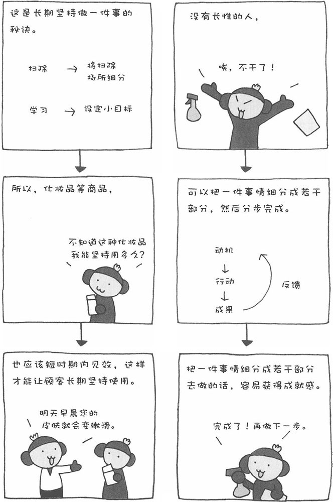

有时，我们想做很多事情，比如锻炼身体、减肥、上电视大学等，但实际做起来却坚持不了多久。像这样没长性的人还不在少数。当然，其中性格是主要原因。如果生性就容易厌倦，做什么事情都长久不了。所谓"厌倦"，就是失去干劲，继续做下去的意志受到阻碍。尤其是对于那些"被命令去做的事"或"不得不做的事"，很快就会感到厌倦。
此外，"厌倦"与行为动机和受到的评价也存在很大的关系。行为动机又分为外在动机和内在动机。所谓外在动机，无非就是"胡萝卜"和"大棒"。比如，家长对孩子说，如果考试得了100分，就给他买一辆自行车，这就是"胡萝卜"，即奖励；在公司中，上司交代的事情如果不做或者做不好，就会惹上司生气，这就是"大棒"，即惩罚。
所谓内在动机，则指自发性的动机。比如，我想去国外旅行，就会为此努力攒钱。对于持续做某事来说，外在动机只有暂时的作用，不会长久发挥作用。举例来讲，比如在训练猴子的时候，当它完成一个任务后，驯兽员会给它一根香蕉作为奖励。长此以往，如果不给香蕉的话，猴子就不会去完成任务。因此，外在动机对于持续做某事来说，意义不大。
为了坚持做一件事情，我们最好先设定小的、具体的目标，每当实现一个小的目标，就会体验到成就感，从而激励我们继续做下去。以打扫房间为例，我们不要把目标设定为打扫完整个房间，而是把任务细分，今天的任务是书房，明天的任务是卫生间……一天打扫一间房间并不难完成，当完成任务后，我们会感到一种成就感。这样一来，我们就有坚持下去的动力了。
此外，如果把奖励的力量与爱情结合起来，那将发挥更大的威力。比如，坚持学一门外语并不是一件容易的事，但如果说"精通外语之后，就可以找外国美女交往"，就可以给我们巨大的动力。
